荷重制約を持つ 2 つのシリンダーのモデル
このモデルでは、大きな質量を支える剛体の棒で 2 つの油圧アクチュエータが相互接続されています。ピストンの力が荷重に直接かかるため、バネは使用されません。これらの力は重力と釣り合うため、線形変位と回転変位の両方が発生します。
同じ基本コンポーネントを使用する 2 つの関連デモ、4 つのシリンダーのモデルおよび 1 つのシリンダーのモデルを参照してください。
- メモ:これは基本の水力学のデモです。SimDriveline™ と SimHydraulics® を使用して、水力学や自動車のモデルをより簡単に作成できます。
- SimHydraulics は、Simulink® の拡張機能として、水力および制御システムのモデル化およびシミュレーションのツールを備えています。これを使用すると、接続された油圧コンポーネントと機械コンポーネントを物理ネットワークとして含むマルチドメイン システムを記述できます。
- SimDriveline は、Simulink の拡張機能として、ドライブライン (ドライブトレイン) システムの仕組みのモデル化およびシミュレーションのツールを備えています。これらのツールには、ギアや回転軸、クラッチなどのコンポーネントに加え、標準のトランスミッション テンプレート、さらにはエンジンやタイヤのモデルが含まれています。
目次
モデルの解析と物理現象
棒の回転角は小さいと仮定します。棒の運動の方程式は、以下の方程式ブロック 1 で与えられています。シリンダーとポンプの動作を説明する方程式は、1 つのシリンダーのデモの場合と同じです。
方程式ブロック 1:
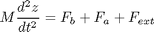
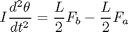
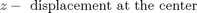
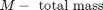
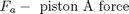
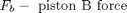
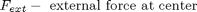
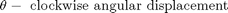
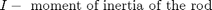
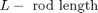
個々のピストンの位置と速度は、形状から直接得られます。対応する方程式を、以下の方程式ブロック 2 で確認してください。
方程式ブロック 2:
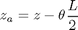
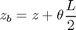
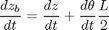
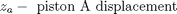
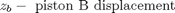
モデルを開いてシミュレーションを実行
このモデルを開くには、MATLAB® 端末で sldemo_hydrod と入力します (MATLAB Help を使用している場合はハイパーリンクをクリック)。モデル ツール バーの [再生] ボタンをクリックしてシミュレーションを実行します。
- メモ:関連データが MATLAB ワークスペースに sldemo_hydrod_output という構造体でログが作成されます。ログが作成された信号には青いインジケーターが付きます (モデルを参照)。信号のログの詳細は、Simulink Help を参照してください。
- メモ:システムの連続状態はすべて MATLAB ワークスペースに xout という構造体でログが作成されます。データ ログを容易にするため、各状態には名前が割り当てられます。状態の名前は、xout.signals の [stateName] フィールドにあります。状態名の詳細は、Simulink Help を参照してください。
図 1: 2 つのシリンダーのモデルとシミュレーション結果
Mechanical Load サブシステム
このサブシステムを図 2 に示します。このサブシステムでは、標準 Simulink ブロックを使用して直接計算する運動の方程式が解かれます。回転角は小さいと仮定されています。Mechanical Load サブシステムのマスクの中を調べ、その構造を確認します (このサブシステムを右クリックし、[マスク ブロックのモデル表示] を選択)。
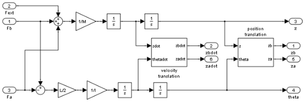図 2: Mechanical Load サブシステム
シミュレーション パラメーター
このシミュレーションで使用されるパラメーターは、以下を除き、1 つのシリンダーのモデルで使用されるものと同じです。
L = 1.5 m M = 2500 kg I = 100 kg/m^2 Qpump = 0.005 m^3/秒 (一定) C2 = 3e-10 m^3/ 秒 /Pa Fext = -9.81*M Newtons
ポンプ流量は一定ですが、バルブは個別に制御されます。最初に、t = 0 ではバルブ B の断面積はゼロです。線形に増加して t = 0.01 秒 では 1.2e-5 m^2 に近づきますが、その後は線形に減少し、t = 0.02 秒 でゼロになります。バルブ A の断面積は t = 0 では 1.2e-5 sq.m. ですが、線形に減少し、t = 0.01 秒 ではゼロになりますが、その後線形に増加し、t = 0.02 秒 では 1.2e-5 sq.m. になります。その後、バルブ A および B の動作は、同じパターンで周期的に繰り返されます。つまり、バルブ A とバルブ B は位相が 180°ずれています。
結果
図 3 および 4 は、棒の線形変位と角変位を示しています。線形変位応答は、タイプ 1 の積分系に典型的にみられます。棒の相対位置と角運動は、位相のずれた制御信号 (バルブ A および B の断面積) に対する 2 つのピストンの応答を示しています。
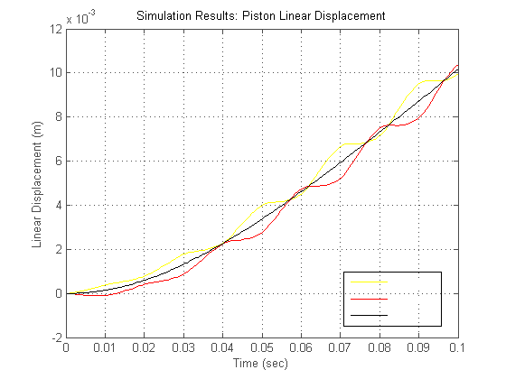図 3: ピストンの線形変位と荷重 (荷重は棒の中央にかかっている)
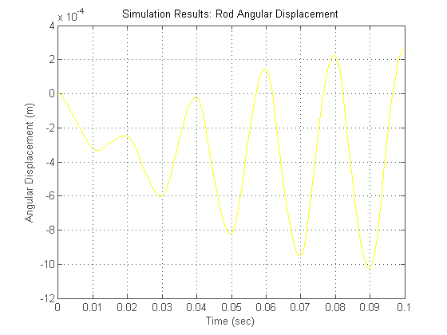図 4: 棒の角変位
モデルを閉じる
モデルを閉じ、生成されたデータをすべて消去します。
まとめ
Simulink は、油圧システムをシミュレートするための生産的な環境を提供し、モデル化の圧倒的な生産性と多くのメソッドの柔軟性をもたらす機能強化を行っています。マスク サブシステムとモデル ライブラリを使用すると、自動コンポーネント更新により、構造化されたモデル化が容易になります。ユーザーがライブラリの要素を変更すると、その要素が使用されるモデルには、新しいバージョンが自動的に組み込まれます。Simulink では、微分代数方程式 (DAE) を使用して、ある流体要素を圧縮不可能なものとして、また別の流体要素をコンプライアンスを持ったものとしてモデル化でき、相互依存回路の複雑なシステムの効率的な解決策を提供します。
このようなモデルは、究極的にはプラント システムまたは自動車システムの一部として使用できます。Simulink は階層構造を持つため、大きなシステム モデル内に配置する油圧アクチュエータを、必要に応じて、独立して開発することができます (たとえば、センサーやバルブの形で制御を追加)。このような場合、MATLAB Control System Toolbox™ の各種ツールを使用して、閉ループ システム全体を解析し、調整できます。MATLAB/Simulink 環境はこのように、設計、解析、モデル化 サイクル全体をサポートする力を持っています。